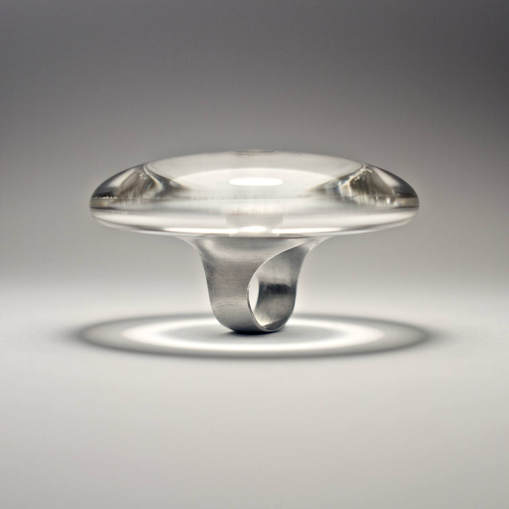
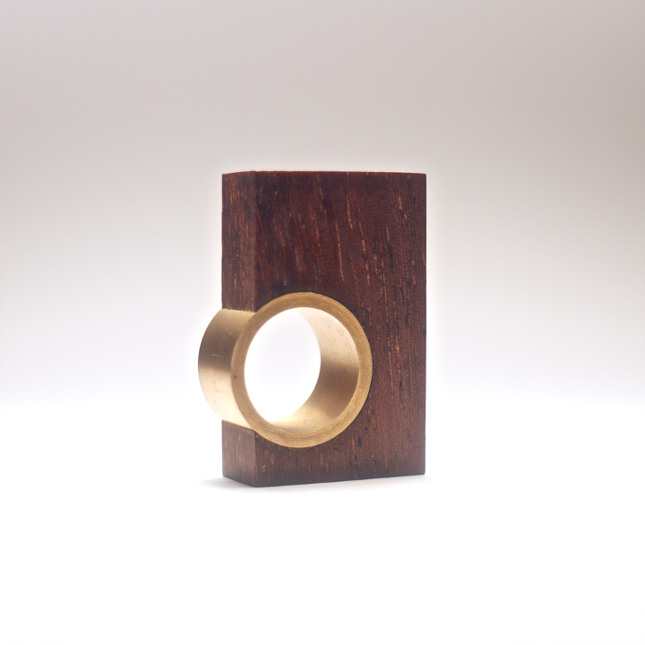
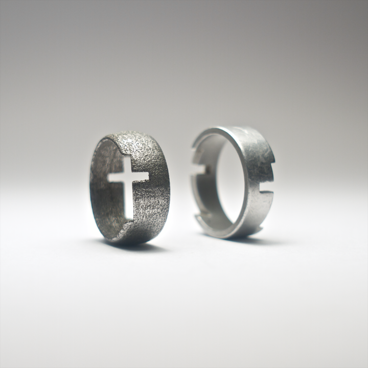

MAGIC MUSHROOM — Curvature-graph analysis of a dioda setting in ring. Made of turned and milled aluminium and laminated acrylic sheets.
MT3 — Cone setting in pendant, using the Morse-taper principle. Wirecut EDM aluminium and turned, tempered silver steel.

MISS_NG — Ring of harmony of geometric disharmony and unbalance. Made of turned bronze and iroko exotic hardwood.
CYCLOPS — The shells of the ring held together with a single longitudinal screw. Made of turned aluminium, brinze and titanium.

CROSSOVER — Ring between the boundaries of 2 and 3 dimensions. Made of turned aluminium and 3D printed stainless steel.
© 2008 – 2017 peter varo